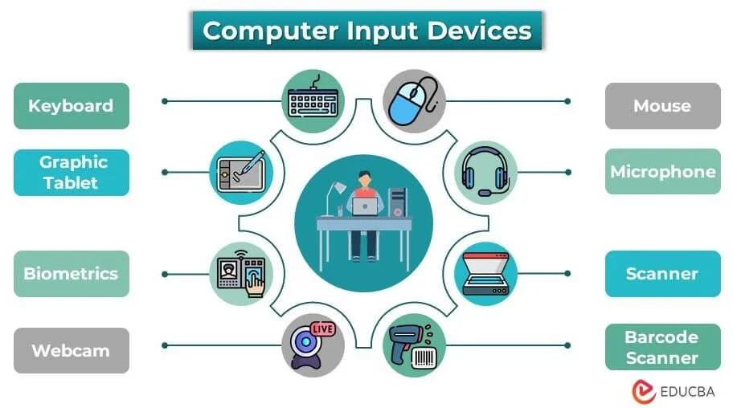

HOME INPUT PROCESSING OUTPUT STORAGE
Input Home computers are microcomputers. Input is supplied to the microcomputer with the use of a keyboard, a mouse, or another input device. These input devices may be called pripheral devices.
